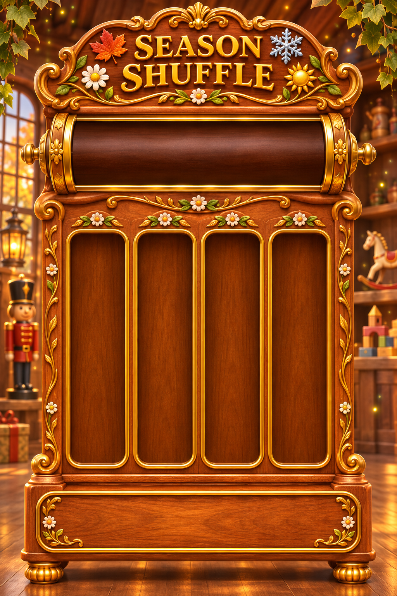
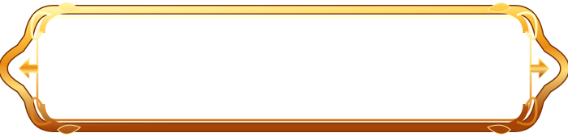

Отмена падения возвращает все три ряда к состоянию перед сбросом.
Компьютер: ↑ / ↓ барабан · Пробел DROP · ← / → сдвиг · Z отмена
Партия сохраняется на этом устройстве автоматически.
Текущая партия будет заменена новой.